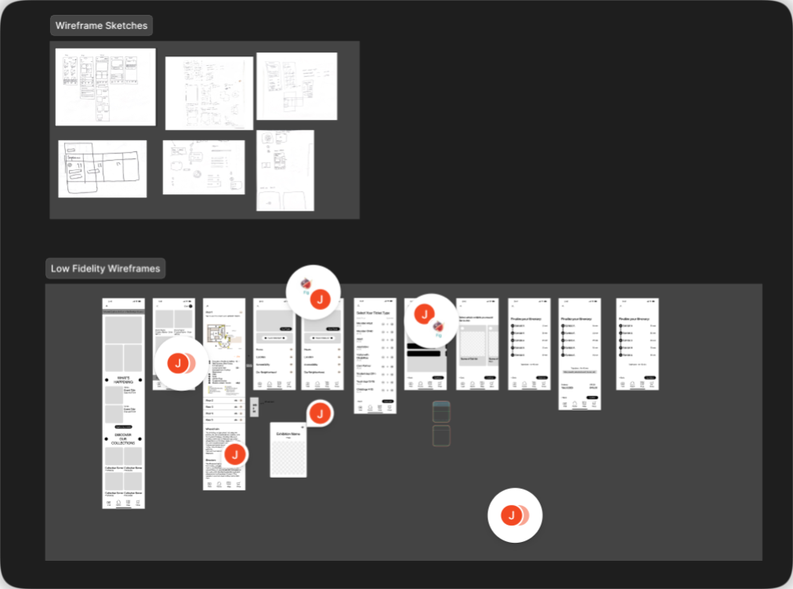
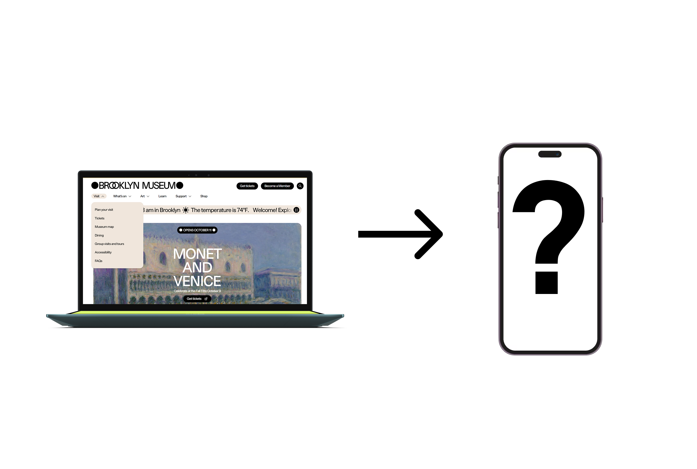

UI Design · Experience Design · 2025
Brooklyn Museum Experiential App
Designing a mobile experience that complements the museum visit with real-time data on exhibits, wait times, and personalized guidance.
Overview
The brief
Design a mobile experience for the Brooklyn Museum that enhances, but never interrupts, the act of viewing art. Real-time exhibit data, wait times, and personalized guidance, without pulling visitors' attention away from the work on the walls.
Goals
- Complement, don't distract: build an immersive experience using data visualization that supports the museum visit rather than competing with it
- Explore alternative interfaces: look beyond the phone screen for what a visitor might actually need mid-visit
- Extend a strong existing system: work within the Brooklyn Museum's established design language rather than designing from scratch
Final Outcome
A mobile experience unifying ticketing, exhibit exploration, wayfinding, and progress tracking, designed to sit quietly alongside the museum visit rather than compete with it.
At a glance
Discovery & Scope
Key data points we identified as valuable to a visitor
- Live occupancy: real-time guest count by wing
- Wait times: estimated wait for popular exhibits
- Progress tracking: mark completed exhibits, see what's left
- Popular times: historical data on busy periods
- Time budgeting: visitor sets how long they want to spend; app paces the visit accordingly
Scope decision
Mobile app as the sole surface: full ticketing, exhibit exploration, wayfinding, and experience tracking. This is where planning happens before the visit and reflection happens after.
Research & Testing
Sketches
Rapid sketching to explore multiple directions at once (navigation patterns, icon states, calendar views) before committing to any one approach.
Wireframes
Used to establish information architecture and user flows ahead of visual design, so the structure was validated before we invested in polish.

Design & Build
Design system
Rather than building a new visual identity, we extended the Brooklyn Museum's own, anchored by their custom typeface, BKM Facade (Other Means Studio), and its bold graphic language.
- Typography: BKM Facade for headlines, with a clear hierarchy from 32px headings down to 16px captions
- Color: the museum's existing palette, adapted for the mobile interface

Reflection
Contributions
- To the field: a new way of interacting with museum spaces, drawing visitors deeper into exhibits through exploration rather than instruction
- To ourselves: real practice in extending and adapting an existing design system to new interactive scenarios, rather than designing in a vacuum
- To society: a model for immersion that spans digital and physical space: visitors can appreciate art physically while being guided by non-distracting digital support
What I took from this
This project pushed me to think carefully about when technology should step forward and when it should recede. Working within an existing design system, rather than creating one from scratch, was valuable practice in its own right: most real-world product work means extending what already exists, not starting from zero. The Brooklyn Museum's brand is already strong. Our job was to make it work in new contexts, and to know when to get out of the way.
Want to dig deeper?
Happy to walk through the full process, share the prototype, or talk through the decisions I didn't have room for here.
Get in touch